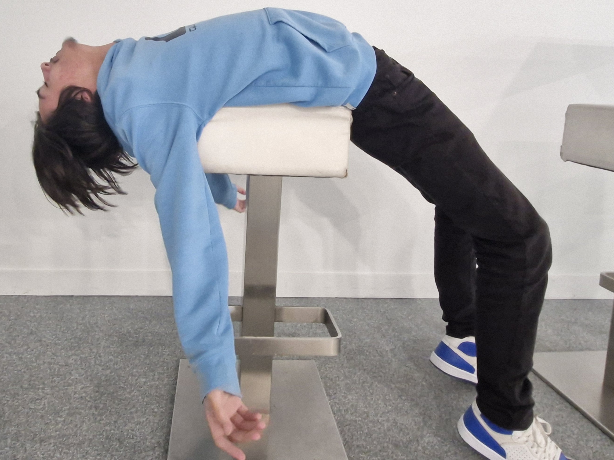
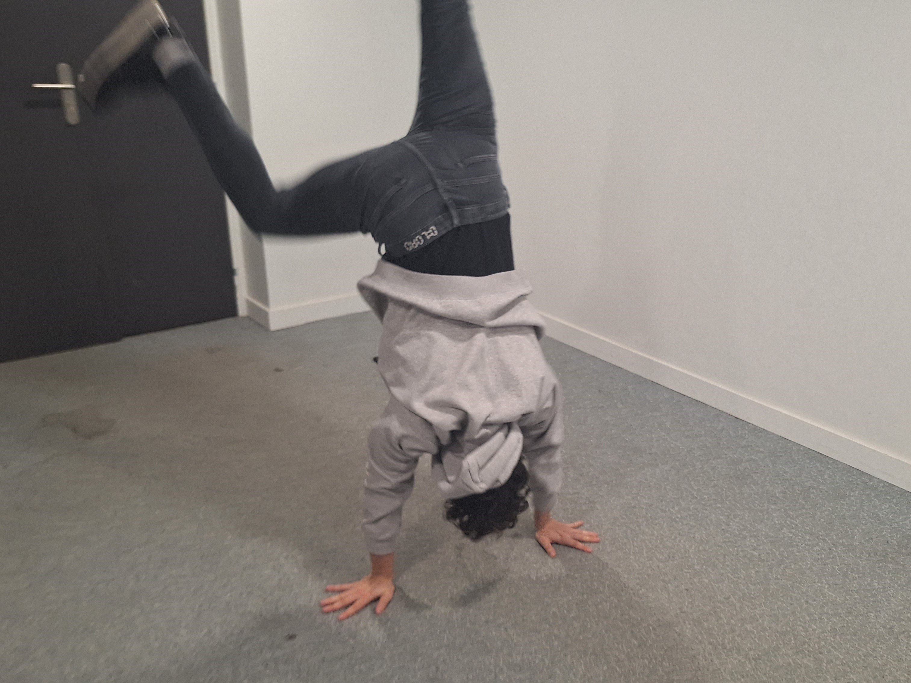

Back-End
Zakaria
18 ans

- À passer plus son temps à cracké des jeux qu’à y jouer.
- Connaît plus de voitures qu’il ne connaît ses tables de multiplication.
- Attends 1 an pour son anniversaire pour ne pas recevoir de cadeau supplémentaire.
🎮:DS / PSP
📱: 07 69 69 69 69
Augustin
19 ans

- Préfère manger avec les gens de la data plutôt qu’avec ses amis de l’îlot.
- Passe plus de temps à jouer avec Tidus qu’à parler avec des gens.
- Défends Jojo comme si c’est son propre fils.
🎮: Nintendo Switch / PS3
📱: 06 666-666
Julien
20 ans

- Son esprit n’est jamais parmi nous (de par son casque).
- Préfère regarder des stream plutôt que manger avec les autres.
- Pourrait vendre sa sœur pour passer un jour dans le livre du Pacte des Marchombre.
🎮: PC
📱:222 2 6 444 555 555 33
Après une présentation désastreuse place au jeu.